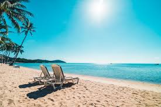
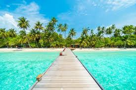

Vacation images

A place that I enjoy going to is the beach.. It is seen as a place of relaxation because it is normally quiet and peaceful there. To look around you and see the beauty of mother nature at it's finest. The majority of people you ask will say that it is one of their favorite vacation destinations. Not only for the beauty and relaxation but for the sheer entertainment. That is the three reasons I enjoy it as much as I do.

I go to the beach to get away from all my troubles that are bothering me. To feel the grainy sand all under your toes. To sit there under the sun feeling the warmth of it beating down on your skin. To know that if you get too hot that you only have to walk about ten feet down until you get into the brisk cool ocean, and feel instant relief from the blistering sun. Also to lay on a float in the ocean and just feel the ocean as you are a part of it. Not only to feel but to hear the waves is the ultimate relaxation.

The beach is not only known as a place to relax ,but as a place of beauty. Many of times you see artist portraying the beach with their paintings, or by singing about its magnificence and its splendor. No matter how descriptive nor how detailed the picture is though it can never capture the beauty that the beach really holds. Not only above but under the water also. The ocean is filled with many colorful and astonishing marine life.

Some people also go to the beach as a recreational area also. The volleyball nets strung tight as a harp. The hammocks swaying loosely in the nice ocean breeze. The drinks flowing and abundant like Niagra Falls. People always find something fun to do at the beach. It may be playing water sports in the ocean, playing volleyball or frisbee on the shore, or just plain relaxing and being lazy by laying in a hammock with a drink in your hand. My preference is the being relaxed and just soaking up the environment around me.